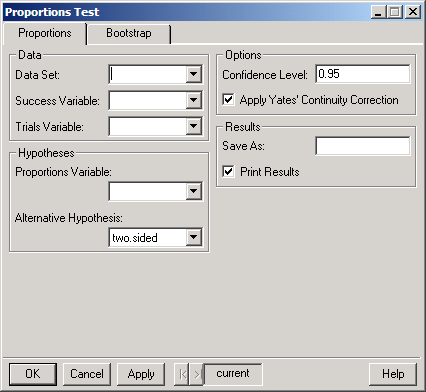
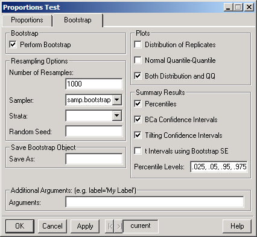

Compare Samples Counts and Proportions Proportions Parameters/Resample. The dialog shown below appears.
Compare Samples Counts and Proportions Proportions Parameters/Resample. The dialog shown below appears. Proportions Test
The proportions parameters test uses a Pearson’s chi-squared statistic to assess whether a binomial sample has a specified proportion parameter p, or to assess whether two or more samples have the same proportion parameter.
As the proportions parameters test uses a normal approximation to the binomial distribution, it is less powerful than the exact binomial test, and hence the exact binomial test is usually preferred. The advantages of the proportions parameters test are that it provides a confidence interval for the proportions parameter and that it may be used with multiple samples.
Alternately, resampling methods may be used, which do not make the normal assumption, and also allow multiple samples.
To perform a test of proportions
Choose Statistics Compare Samples Counts and Proportions Proportions Parameters/Resample. The dialog shown below appears.
Proportions Page
 Click individual fields in the dialog below for more specific information.
Click individual fields in the dialog below for more specific information.

Bootstrap Page
Click individual fields in the dialog below for more specific information.

Related S-Plus language functions:
prop.test, print.htest, menuProp
Resampling functions:
bootstrap, bootstrap2, plot.resamp, qqnorm.resamp, summary.resamp, limits.percentile, limits.bca, limits.tilt, limits.t.